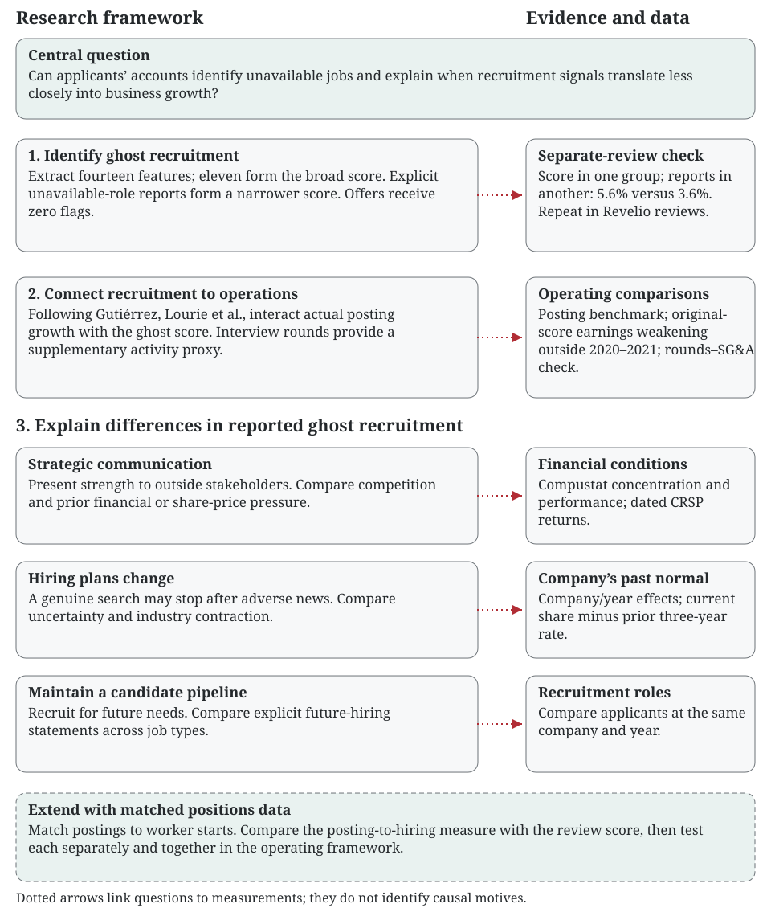

What we measure
Our ghost-job score is the share of interview reviews flagged by an eleven-feature rule. We extract fourteen features in total; job persistence, recruiter mentions and interview rounds describe recruitment separately. Reviews reporting an offer receive zero flags. A narrower score counts only explicit reports that hiring was unavailable or for the future.
Interview counts and rounds measure recruitment activity. They are not the ghost-job score.
Different applicants report the same problem
At higher-scoring company-years, about 5.6 in every 100 separate no-offer reviews describe unavailable roles, compared with 3.6 in every 100 at lower-scoring company-years. That is roughly two additional reports per 100. The reviews used to check the score are separate from those used to build it.
| Separate no-offer reviews | Lower-scoring companies | Higher-scoring companies |
|---|---|---|
| Original collection, A → B | 3.57% | 5.60% |
| Original collection, B → A | 3.67% | 5.63% |
| Revelio, A → B | 1.19% | 1.50% |
| Revelio, B → A | 1.08% | 1.52% |
Original groups use the top and bottom scoring quartiles; Revelio groups use the scoring median. Reversing the groups preserves the pattern. These are reports by applicants, rather than direct observations of whether a vacancy existed. Original results · Revelio results
Recruitment and later business growth
Gutiérrez, Lourie, Nekrasov and Shevlin (2020) show that job postings contain information about future operations. We use their logic as a check: if our score identifies unavailable jobs, more recruitment should translate less closely into growth where that score is higher.
Our U.S. Indeed counts predict later employment, SG&A and sales growth. The operating-earnings benchmark is less precise.
Posting benchmark and specification
| Next-year growth | Posting coefficient | p-value | Company-years |
|---|---|---|---|
| Employment | 0.000099 | 0.004 | 6,394 |
| SG&A | 0.010900 | <0.001 | 6,406 |
| Sales | 0.019501 | 0.007 | 6,414 |
| Operating earnings | 0.001235 | 0.720 | 6,414 |
Posting growth compares average active ads in the first fiscal quarter after year-end with the same quarter a year earlier, scaled by assets, then ranked from 0 to 1. Controls are prior asset-scaled changes in earnings, sales, SG&A, employment, capital expenditure, R&D and advertising, plus book-to-market. Financial caps stay at 1%/99%; errors cluster by company. EMP is in thousands, other accounting values in USD millions. These operating tests do not replicate the paper’s investor-return tests.
The original score gives the expected earnings weakening outside 2020–2021
The original-score interaction is −0.190 (p = 0.002), using 411 company-years from 86 companies and 9,730 reviews. It stays negative after omitting each company, with company and year effects, and when we use the original raw share. The resampling p-value is 0.008.
Simply put: among companies with comparable recruitment changes and controls, the link to later earnings is weaker where more applicants report ghost-job experiences.
| Original-score earnings check | Interaction (SE) | p-value | Resampling p-value | Company-years | Companies |
|---|---|---|---|---|---|
| Original score, all years | -0.100169 (0.055929) | 0.077 | — | 520 | 86 |
| Original score, outside 2020–2021 | -0.189646 (0.059954) | 0.002 | 0.008 | 411 | 86 |
| Original raw share, outside 2020–2021 | -0.137619 (0.052778) | 0.011 | 0.015 | 411 | 86 |
| Original score, posting coverage screen | -0.275178 (0.080877) | 0.001 | 0.004 | 310 | 83 |
Why earlier summaries looked different
The original saved score and the broader Revelio score use different review collections and smoothing histories. They are distinct score versions. The original full-period earnings interaction is negative but less precise; excluding 2020–2021 strengthens it.
Removing R&D and advertising controls on the same 411 observations preserves the original-score result (p = 0.004). Expanding to the larger core-control sample gives −0.070 (p = 0.266; 989 company-years). The change therefore also reflects which companies enter. The table shows the relevant samples rather than treating every specification as the same result.
A negative P × G coefficient means a weaker recruitment–earnings slope at higher scores. Original scores require December fiscal year-ends. The saved score uses the original history-based smoothing; the raw version uses unchanged flags. The posting-coverage rule excludes recruiting windows and 180-day lookbacks affected by source gaps; it was fixed before the corrected posting estimates. Resampling uses 4,999 null-imposed company draws. The remaining financial caps and posting ranks are unchanged.
Two related checks
Using only explicit unavailable-role reports in Revelio reviews also gives a negative earnings interaction outside 2020–2021: −0.205 (usual clustered p < 0.001; resampling p = 0.065; 4,013 company-years). The full-period result changes with smoothing and period selection.
More reported interview rounds are followed by higher SG&A over two years; that link is weaker at higher original ghost scores (interaction −0.074, p = 0.043; 749 company-years). Rounds are an applicant-based activity proxy. Rounds results
Why might firms have ghost jobs?
We examine three possibilities: signaling strength, hiring plans interrupted by changed conditions, and recruitment for a future candidate pool.
The clearest differences are across job types
Among no-offer applicants, management reviews report unavailable roles and future hiring more often than service reviews. Comparing applicants at the same company and year, management has a 0.75-point higher unavailable-role rate and a 0.24-point higher future-hiring rate (both p < 0.001).
| Applicant job type | No-offer reviews | Unavailable role | Future hiring |
|---|---|---|---|
| Management | 47,119 | 1.54% | 0.44% |
| Operations / service | 7,507 | 0.84% | 0.12% |
| Other / unclassified | 96,250 | 0.83% | 0.22% |
| Professional / technical | 147,815 | 0.93% | 0.26% |
| Sales / customer | 21,274 | 1.10% | 0.37% |
Job types come from a fixed title-word dictionary. They do not measure qualifications or prove why a company recruited. The within-company-year comparisons use 319,965 no-offer reviews from 3,309 companies.
Compare with the company’s past normal
We also subtract its review-weighted rate over the prior three years. A company moving from 5% previously to 12% now has a score seven percentage points above its past normal. This uses past reviews only, with at least ten previous reviews spread across two years.
Financial conditions: results and specification
Within the existing posting-linked review universe, the financial model covers 10,595 company-years from 2,028 companies. Adding historical stock information gives 8,176 company-years from 1,595 companies. The joint financial comparisons do not show a common clear relationship with the broad or explicit score at the 5% level. Prior share-price deterioration is positively related to explicit unavailability at p = 0.091; its adjusted p-value is 1.000.
| Prior-year condition | Broad score: pp (p-value) | Unavailable-role score: pp (p-value) | Future-hiring score: pp (p-value) |
|---|---|---|---|
| Profit deterioration | -0.059 (0.812) | -0.000 (1.000) | 0.044 (0.189) |
| Sales decline | 0.174 (0.290) | 0.002 (0.955) | 0.000 (0.998) |
| Operating uncertainty | -0.042 (0.915) | 0.177 (0.115) | 0.122 (0.104) |
| Competition | 0.337 (0.187) | -0.014 (0.826) | -0.035 (0.249) |
| Industry contraction | -0.023 (0.849) | 0.029 (0.370) | 0.001 (0.948) |
| Share-price deterioration | -0.033 (0.844) | 0.068 (0.091) | -0.008 (0.764) |
| Stock volatility | 0.066 (0.774) | -0.021 (0.665) | -0.033 (0.258) |
Entries are percentage-point changes per one standard deviation of the condition, with conventional p-values in parentheses. Company controls are log assets, leverage, operating ROA and capital expenditure/assets. Competition uses all positive-sales U.S. public firms in each industry, not only review firms. Stock returns use dated historical CCM links and at least nine prior-year months. The menu includes three outcomes, review-count screens, precision weights and above-normal shares: 45 financial fits, all saved. These associations do not identify an employer’s intent.
What still needs new data?
Matched worker starts would let us compare postings with actual hires, build a second ghost-job measure, and test both scores separately and together. Our current files do not show how many qualified people applied. Local labor-market tightness would need a separate geographic merge.
Figure 1. The study in one view

Tables and methods
Only aggregate results are public. Existing result files and earlier tables remain available. No paid API calls were made for this update.